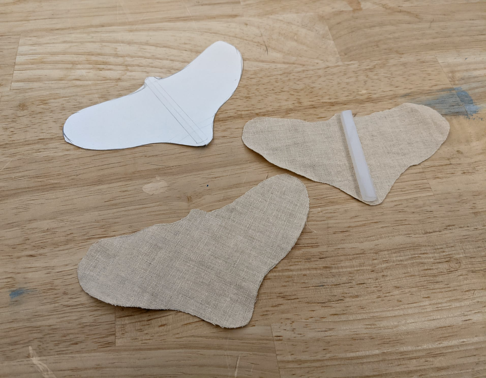
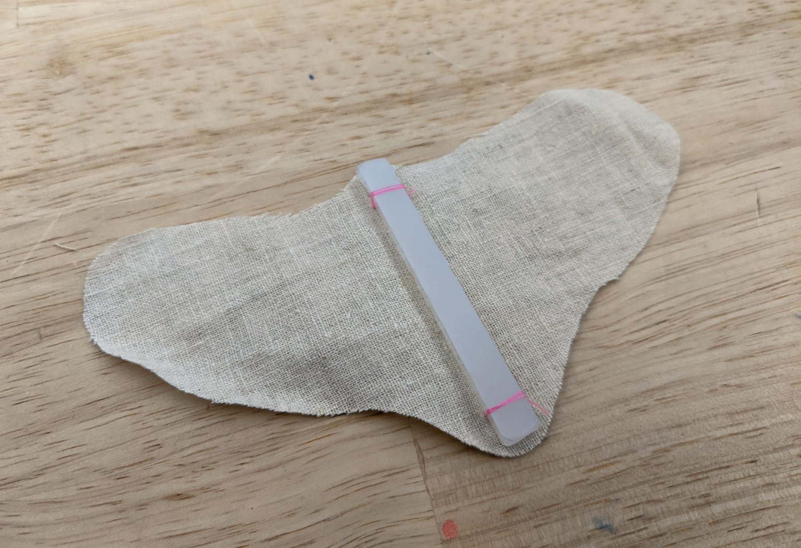
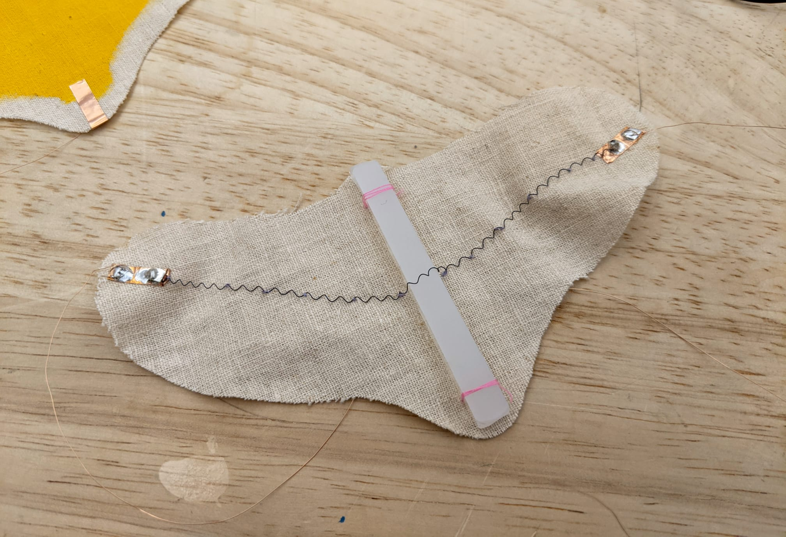
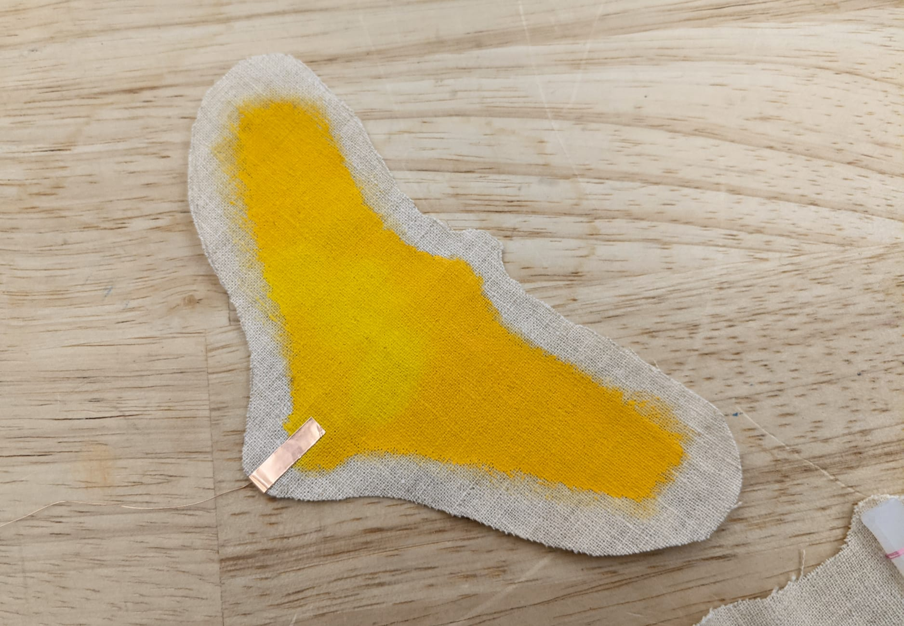
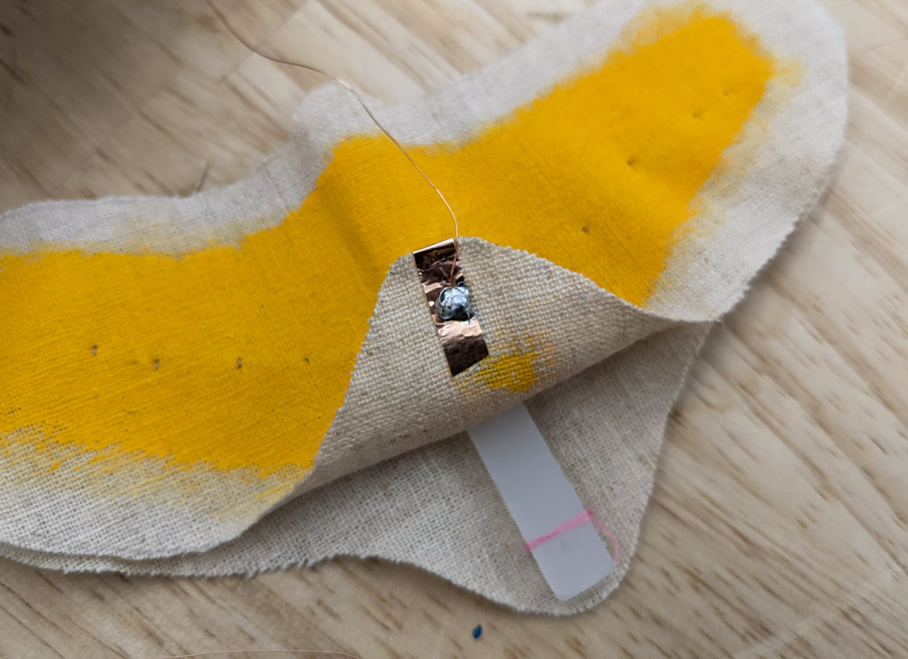
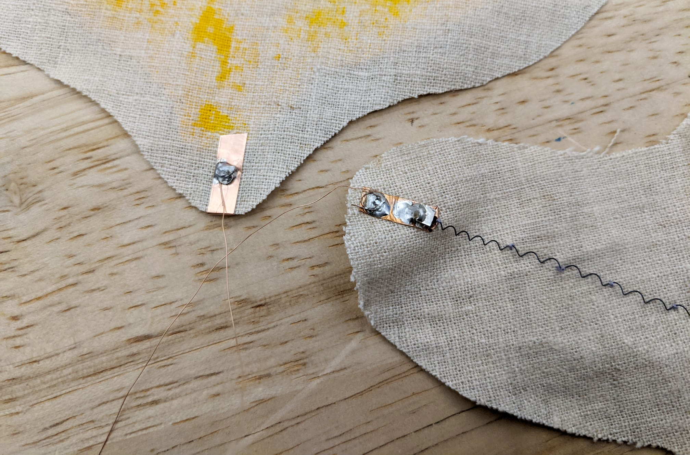
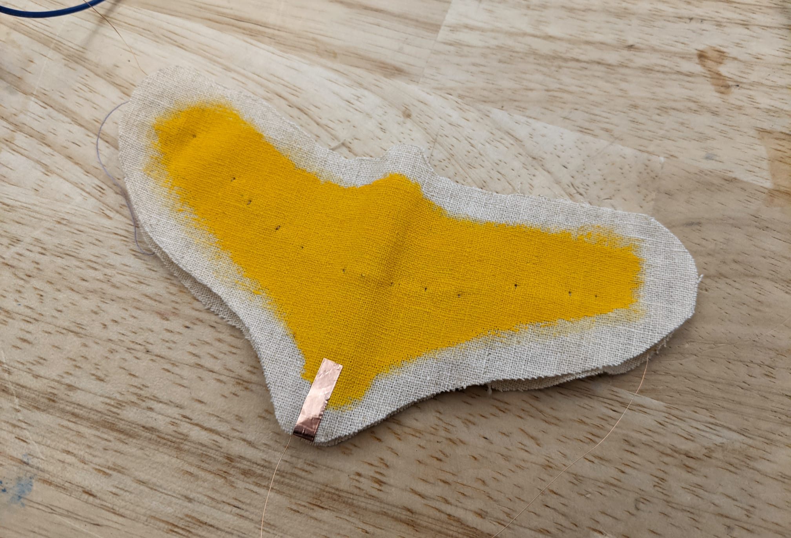
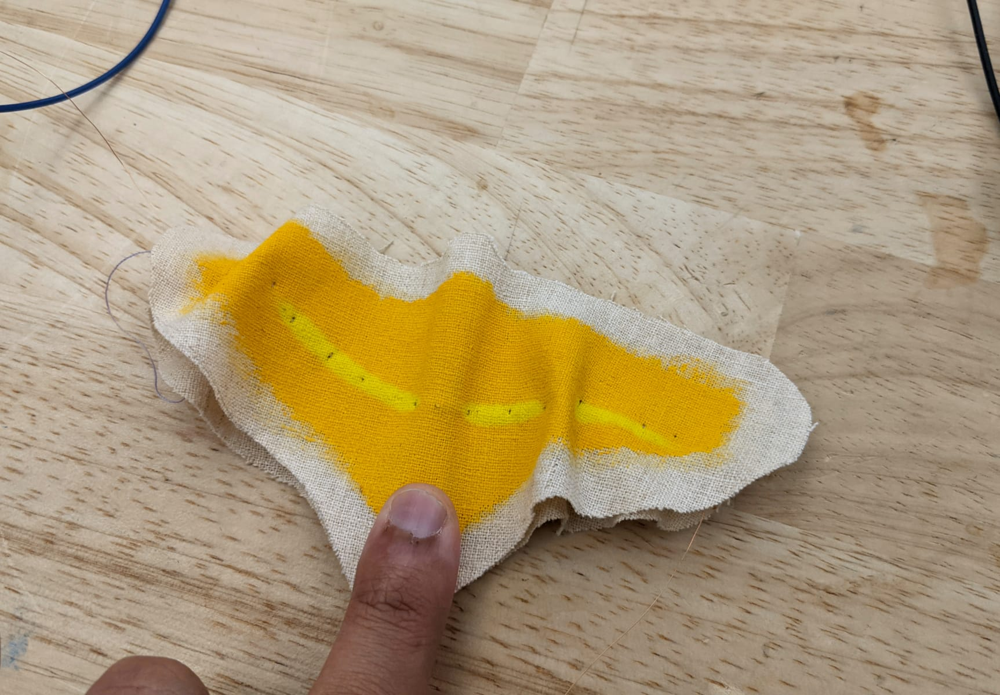
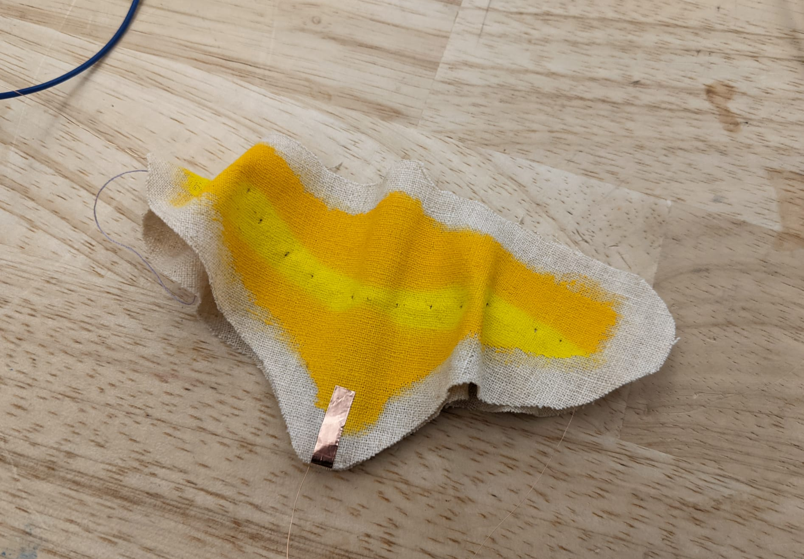
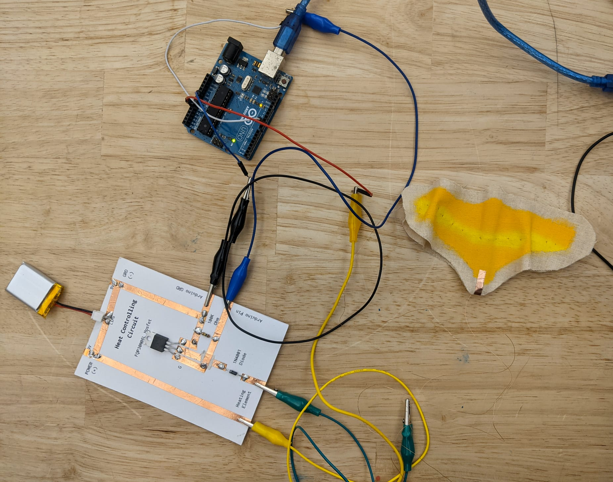

← Computational Craft | Salil Parekh
Week 12 | Shape Memory Alloys
Shape Memory Alloys, or SMAs are materials which change their form when heated. I created a small moth like piece which demonstrates how SMAs and thermochromic dye works. When current is applied across the SMA wire, it heats up and changes shape.
To create the main body of the moth, I drew a shape of the moth on paper, cut it, and used it as a stencil to cut shapes out of muslin.
 Paper stencil to draw and cutout moth shapes
To prevent the moth from folding onto itself, I used a small strip of thick frosted acrylic to place in the middle to anchor the SMA onto, and to provide further structural rigidity.
 Thick piece of frosted acrylic used as structural frame
The SMA wire was held into place on the wings using a simple couched stitch. When stretched the SMA wire is also a little stiff, which provides additional rigidity to the wings.
 Attaching the SMA wire over the wingspan of the moth
The bottom layer holds the SMA, and the top layer holds the thermochromic dye. When the SMA is heated, the top layer will be affected by the heat and as a result, the colour will change.
In order to control the heating of the wire, I created a simple capacitive switch from copper tape. When touched, the copper tape will activate the heating and subsequent colouring and folding of the wings.
 The thermochromic dyed layer with a copper tape as a button
I used incredible thin and light 34AWG enamel coated copper wire, 0.0063" in diameter to connect the moth to the Arduino and step up mosfet. This wire is so thin and light that it is visually near invisible, and doesn't affect the folding of the wings. These wires were sanded down on the ends to remove the enamel coating and soldered onto the patch of copper tape.
 Copper wire soldered to underside of the copper tape
Soldering the crimps which held the SMA was fairly tricky and required a hacky jig of a crocodile clip to prevent the heat of the soldering iron from deforming the SMA.
 Soldering the SMA via crimps and the thin gauge enamel coated copper wire
 When left alone
 On being touched
 Heat slowly spreads out from the center
Video of the moth in action
 Complete circuit
const long interval = 1000;
unsigned long previousMillis = 0;
float buttonVal = 0;
void setup() {
Serial.begin(9600);
pinMode(A0, INPUT);
pinMode(9, OUTPUT);
}
void loop() {
buttonVal = analogRead(A0);
Serial.println(buttonVal);
if ((buttonVal < 300) && (buttonVal > 50)) {
unsigned long currentMillis = millis();
if (currentMillis - previousMillis >= interval)
{
previousMillis = currentMillis;
analogWrite(9, 205);
}
}
}
Code for the circuit
Response to this week's readings
The chapter, Woven Memory from Fabric of Interface: Mobile Media, Design, and Gender by Stephen Monteiro is an incredible read. As I read the text, I had a few realisations. The first of which was another reaffirmation of the power of the capitalist organisation of the economy. The economic model rewards exploitative practices and incentivises the continuation of such practices. It’s difficult to identify the exploitation in the things we interact with, such is obfuscation of the system. For the vast majority of us, it’s not even a conversation we can afford to have, as we ourselves are being exploited and it creates a cycle which is near impossible to escape out of. The text takes us backstage and gives us a glimpse into an otherwise rather glorified and celebrated event. It’s far too easy to get drawn into the seductive narrative and not question how it was created. It’s also difficult to ‘solve’ it–the very machine I’m using to type this text is the sum of layers (plural) of exploitation.
This leads me to another takeaway–what is the true value of things? The iPhone is a great example to discuss. It’s an incredible device, with magnitudes more computing power than the computer which took us to the Moon. But let’s take a smaller example, a simpler micro-controller like the Teensy LC. It’s still a complex product, with lots of smaller components such as LEDs, resisters, capacitors and a processor. It costs around $11.65 to buy, but is that really the true cost? Does the asking price cover the costs of making and shipping with regard to labour, material extraction and the infinitely complex socio-political layers? Or the effect it has on the other species, abiotic entities and planetary systems?
Lastly, it was fascinating to see the use of processes and tools used to create textiles used in what is usually a field devoid of such methods, at least in the way it is disseminated now. There is so much value in an interdisciplinary approach that we’re missing out on, especially in the way we’re being taught about digital technologies. The affordances of textile methods in computing are relevant for so many applications, not just the ones highlighted in the article for zero-g in outer space.
Previous post: Week 11 | Thermochromistry
Next post: Week 14 | Final Proposal